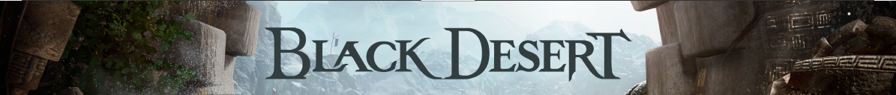
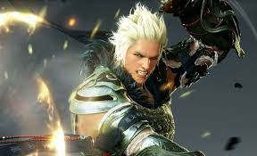
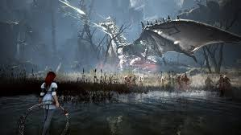
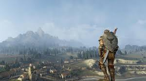
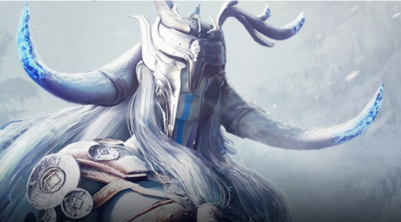
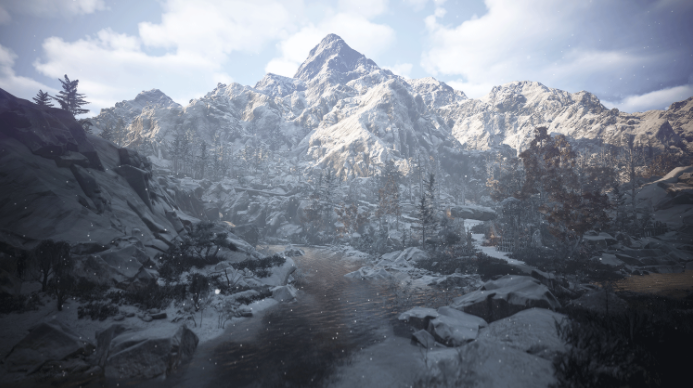

|  | |||||||||||
MMORPG МИРОВОГО УРОВНЯБлагодаря Ремастерингу воплощается еще более реалистичная графика и живое звучание, Black Desert расширяет рамки MMORPG. Битвы и осады с эффектными сражениями, а также Исследования, Торговля, Рыбалка, Укрощение, Алхимия, Кулинария, Сбор, Охота и множество различного контента, которым можно наслаждаться в огромном мире! MMORPG Black Desert. |
|||||||||||
ГРАФИКАПознакомтесь с открытым миром Black Desert, созданным на основе самостоятельно разработанного игрового движка. Испытайте совершенно новые ощущения, погрузившись в превосходящую реальность графику! |
БОЕВАЯ СИСТЕМАИспытайте азарт увлекательной битвы!Реалистичные бои с использованием комбо из различных навыков,а также потрясающие эффекты! |
ОТКРЫТЫЙ МИРПомимо реалистичных битв, Вас ожидает разнообразный ремесленный контент - Торговля, Рыбалка, Укрощение, Алхимия, Кулинария, Сбор, Охота и многое другое. |
УНИКАЛЬНЫЕ ПЕРСОНАЖИС помощью уникальной системы создания персонажа в Black Desert, вы можете самостоятельно настроить внешность своего персонажа. Можно регулировать как рост, телосложение, прическу и форму лица, так и мельчайшие детали! |
||||||||
|  |  |  | |||||||||
ВОЙНЫ ЗА ТЕРРИТОРИЮВ Black Desert Вы можете наслаждаться PvP контентом в масштабе гильдий. Участвуйте в битвах за узлы и захвате территории!Приведите свою гильдию к победе, сплотившись с соратниками. |
ЗНАНИЯЗнания - сила! Чем больше Вы получаете знаний, тем сильнее становитесь. Получить знания можно различными способами - в ходе битвы или исследования, либо в диалоге с НИП. |
МИРОВОЗЗРЕНИЕОснова древней цивилизации - таинственные «Черные камни» - являясь мощным источником энергии, оказали большое влияние на развитие технологий Древних. В то же время, говорят, что Черные камни, затуманив разум Древних своей неестественной активностью, стали причиной падения их цивилизации. Большое количество Черных камней находится в пустыне между Кальфеоном и Валенсией. Кальфеон назвал землю, где сокрыты Черные камни, Черной пустыней и развязал войну с целью захвата ее ресурсов. А в Валенсии эту пустыню называют Красной, так как множество солдатов Валенсии погибло в кровопролитной войне. Раскройте секреты цивилизации Древних, таящиеся в недрах истории! |
|||||||||
|  |
ГОРЫ ВЕЧНОЙ ЗИМЫСледующее глобальное обновление принесёт с собой ледяной ветер, прямиком с гор вечной зимы. Обновление запланировано на 6 апреля. Не пропустите возможность одним из первых опробовать новый класс персонажа и исследовать новые снежные территории. |
 | |||||||||